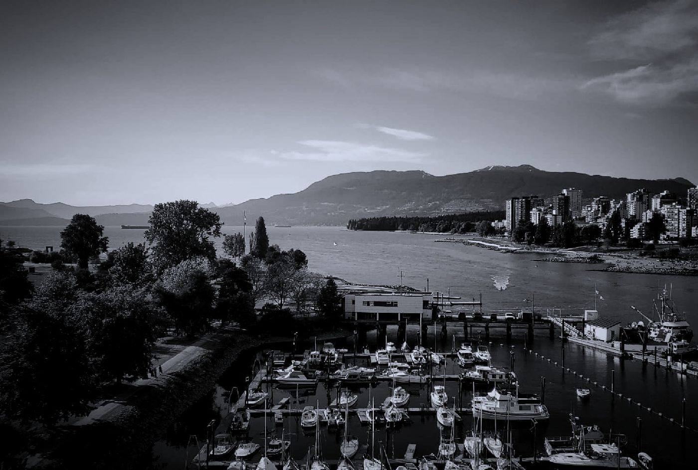

Terminal City14 / 20
The Outer Circuit
Feet against pavement.Tires through rain.Dark waterbeside the path.Another lamp.Another curve.The same lamp again.Stopped.Turned around.Different lamp.Kept walking.For three secondsthe path aheaddoes not seem attachedto the path behind.Only water.Trees.City light.Then footsteps enterfrom around the bend.Everything joins again.A laugh,quietly,from sheer nerves.Walked the circuit once more.Nothing happened.Disappointed.That was new.

Next · 15Green Static
Field notes
